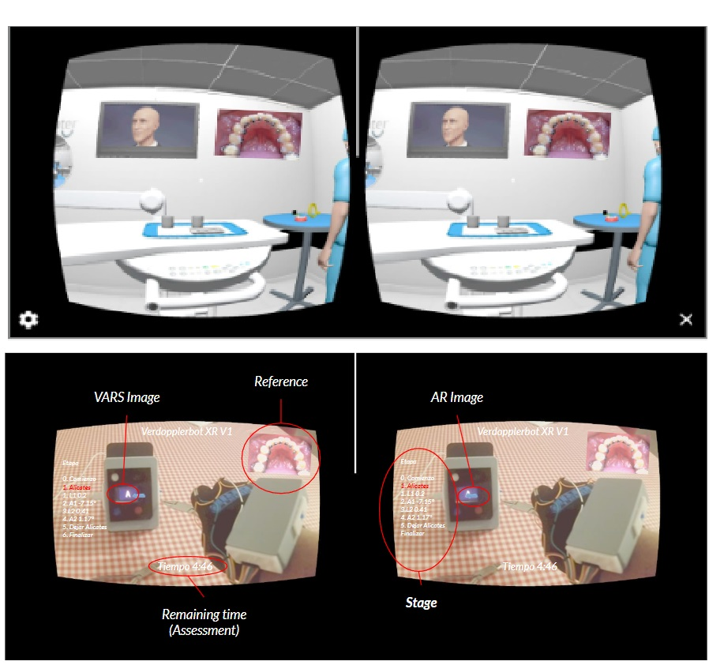
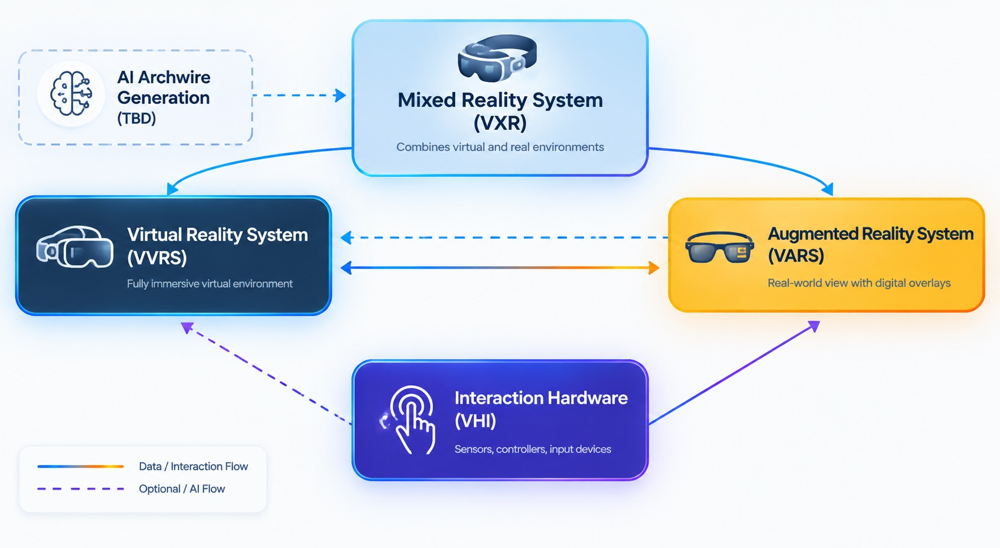
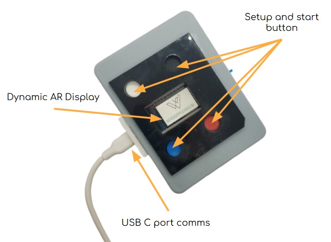
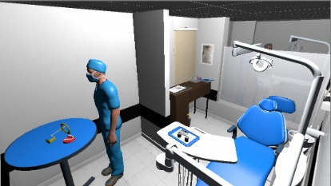
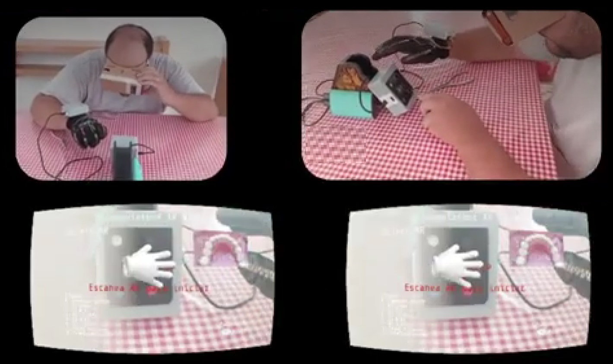

01
Offload the processing
The XR viewer can concentrate on delivering the immersive visual experience while OptanAR handles additional processing requirements.
OptanAR is a local XR processing platform that combines sensor information, artificial intelligence and interaction history to generate dynamic visual markers and intelligent information directly through an XR viewer.
OptanAR acts as a dedicated local processing layer between the immersive XR experience and the information that needs to be interpreted.
The XR viewer can concentrate on delivering the immersive visual experience while OptanAR handles additional processing requirements.
AI processing can operate locally, combining current sensor information with information accumulated through previous interactions and training.
OptanAR can transform processed information into dynamic markers and visual elements that can be presented through the XR viewer.
A simple analogy: the screen displays the experience, while the console performs the processing. Controllers provide information to the console; they do not turn the screen into the console.
OptanAR applies a similar principle to XR. The viewer presents the experience, while OptanAR processes information coming from sensors, AI and previous interactions.
Dynamic markers, contextual information and interaction-driven content.
The current demonstrations focus on orthodontics, showing how processed information can become part of an XR-assisted experience.


Discover the principles behind XR and explore how immersive technology can transform the way we experience the world.




OptanAR is designed around local processing and controlled information handling. In a clinical environment, this can provide an architecture in which sensitive information can be processed locally rather than requiring every operation to depend on an external service.
Specific privacy, security and regulatory claims depend on the final deployment architecture, configuration and applicable requirements.
Explore how OptanAR can connect XR visualization, sensors and local AI in a single processing platform.
Talk to us